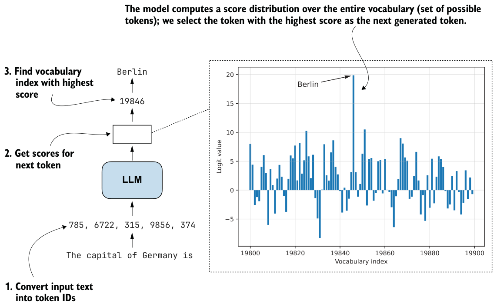
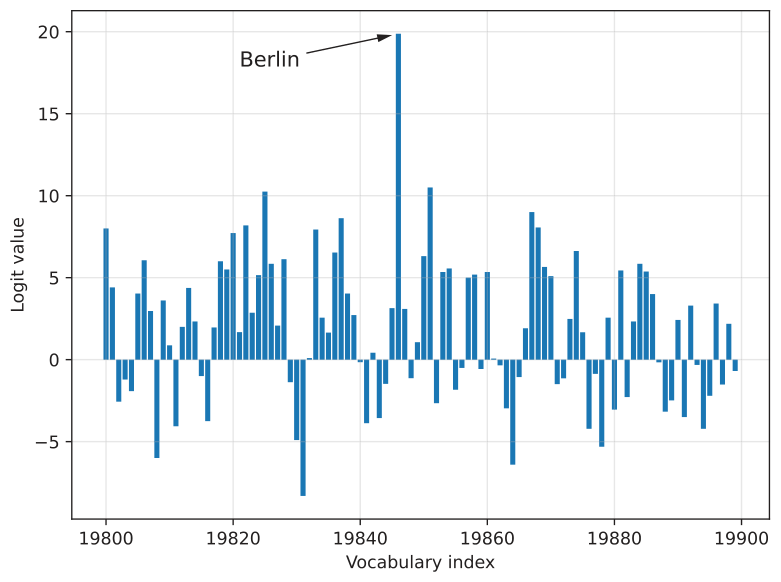

4.4.1Understanding the process of selecting the next token
Let’s take a closer look at the text generation process we’ve implemented so far and see how the next-token selection process works under the hood. This will help you understand the motivation behind temperature scaling.
Suppose we have the following simple prompt:
ex_prompt = "The capital of Germany is"
response = generate_text_stream_concat_flex(
model, tokenizer, ex_prompt, device,
max_new_tokens=1, verbose=True
)The model’s response is " Berlin". This looks relatively simple, but multiple steps are happening under the hood, as illustrated in figure 4.6.
When generating text, the inputs are first converted into token IDs (as discussed in chapter 2):
input_token_ids = torch.tensor(
tokenizer.encode(ex_prompt), device=device
).unsqueeze(0)
print(input_token_ids)In this case, these are the token IDs:
tensor([[ 785, 6722, 315, 9856, 374]])
In the second step in figure 4.6, we get the scores for the output token we want to generate. These output scores are also called logits. An LLM generates one output token for each input token, but we are interested only in the last token, which we select via the [:, -1] tensor indexing. This last token corresponds to the token we want to generate:
with torch.inference_mode():
next_token_logits = model(input_token_ids)[:, -1]
print(next_token_logits.shape)The printed output shape is [1, 151936], where 151936 is the vocabulary size for this tokenizer and model. The vocabulary includes all the unique tokens the tokenizer can handle and the LLM can generate.
To obtain the next generated token (" Berlin" in this example), we have to find the vocabulary entry associated with the largest score (step 3 in figure 4.6):
max_token_id = torch.argmax(next_token_logits)
print(f"Token ID: {max_token_id}")
print(f"Decoded token: '{tokenizer.decode([max_token_id])}'")The output follows:
Token ID: 19846
Decoded token: ' Berlin'We’ve now covered the three main steps in generating the next token. Before we move on to the next section, let’s take a closer look at the score distribution of the next_ token_logits tensor we passed to the torch.argmax function to obtain the token IDs. We’ll plot it in Matplotlib.
import matplotlib.pyplot as plt
def plot_scores_bar(
next_token_logits, start=19_800, end=19_900,
arrow=True, ylabel="Logit value"
):
x = torch.arange(start, end)
logits_section = next_token_logits[0, start:end].float().cpu()
plt.bar(x, logits_section)
plt.xlabel("Vocabulary index")
plt.ylabel(ylabel)
if arrow:
max_idx = torch.argmax(logits_section)
plt.annotate(
"Berlin",
xy=(x[max_idx], logits_section[max_idx]),
xytext=(x[max_idx] - 25, logits_section[max_idx] - 2),
arrowprops={
"facecolor": "black", "arrowstyle": "->", "lw": 1.5
},
fontsize=10,
)
plt.grid(alpha=0.3)
plt.tight_layout()
plt.show()
plot_scores_bar(next_token_logits)We are restricting the plot to the 100 vocabulary index tokens between 19,800 and 19,900, rather than plotting the scores for all 151,936 entries, which would make the plot too crowded. I selected this range because it contains the entry with the highest score. The resulting plot is shown in figure 4.7.
The plot in figure 4.7 shows the 100 logit values (scores) for vocabulary indices 19,800–19,899. The values range approximately from –8 to 20, and the value 20 corresponds to the vocabulary index for the token " Berlin".
